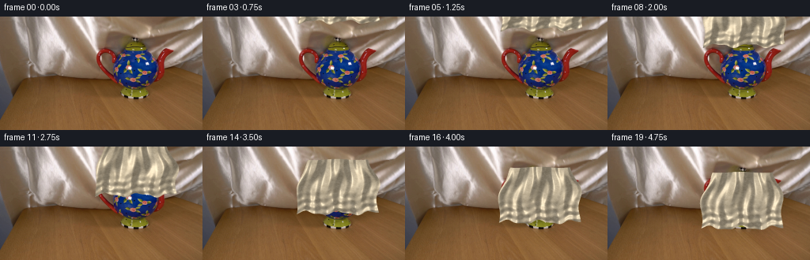
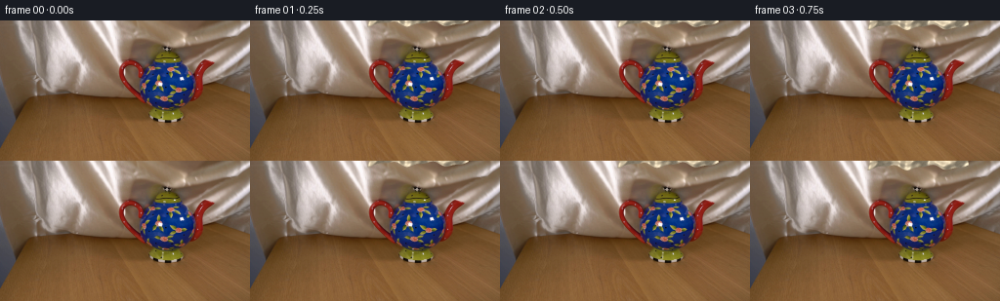

CODING AGENTS AS PIXEL WORLD MODELS
traex/DeepSeek-V4.1-Flash · 0157
点击播放 · 原生 RGB 像素
逐轮保存的候选
回放视频、检查图与代码变化。
每份候选均可单独播放。实际图片检查记录在下方工具轨迹中。
候选 01播放与检查图
点击播放 · 原生 RGB 像素

展开代码变化
--- 上一保存版本
+++ 本次保存版本
@@ -0,0 +1,200 @@
+from pathlib import Path
+
+import cv2
+import numpy as np
+from PIL import Image
+
+import artifact_io
+
+
+CASE_DIR = Path(__file__).resolve().parent
+WIDTH = 256
+HEIGHT = 144
+FRAMES = 20
+SUPERSAMPLE = 2
+
+
+def smoothstep(x):
+ x = np.clip(x, 0.0, 1.0)
+ return x * x * (3.0 - 2.0 * x)
+
+
+def make_texture(seed=157):
+ rng = np.random.default_rng(seed)
+ fields = []
+ for sigma, weight in ((0.75, 0.20), (2.1, 0.32), (6.0, 0.30), (16.0, 0.18)):
+ field = rng.normal(0.0, 1.0, (384, 384)).astype(np.float32)
+ field = cv2.GaussianBlur(field, (0, 0), sigma)
+ field /= field.std() + 1e-6
+ fields.append(weight * field)
+ texture = sum(fields)
+ texture = (texture - texture.mean()) / (texture.std() + 1e-6)
+ return texture
+
+
+TEXTURE = make_texture()
+
+
+def sheet_parameters(frame):
+ u = np.clip((frame - 1.0) / 18.0, 0.0, 1.0)
+ progress = smoothstep(u)
+ top = -54.0 + 86.0 * progress
+ height = 57.0 + 14.0 * progress
+ center_x = 171.0 + 1.15 * np.sin(2.0 * np.pi * (0.08 + 0.58 * progress))
+ phase = 2.0 * np.pi * (0.13 + 0.72 * progress)
+ return progress, top, height, center_x, phase
+
+
+def fold_height(u, v, progress, phase):
+ warp = 0.22 * np.sin(2.0 * np.pi * v + phase)
+ folds = 0.62 * np.sin(2.0 * np.pi * (2.65 * u + warp))
+ folds += 0.29 * np.sin(2.0 * np.pi * (5.15 * u - 0.43 * v + 0.08 * phase))
+ folds += 0.16 * np.sin(2.0 * np.pi * (8.70 * u + 0.65 * v - 0.05 * phase))
+
+ # Broad diagonal tension folds and smaller settling wrinkles near the hem.
+ folds += 0.22 * np.exp(-((u - 0.36 - 0.10 * np.sin(2.0 * np.pi * v)) / 0.16) ** 2)
+ folds -= 0.16 * np.exp(-((u - 0.72 + 0.06 * np.cos(2.0 * np.pi * v)) / 0.14) ** 2)
+ folds += (0.10 + 0.06 * progress) * np.sin(
+ 2.0 * np.pi * (7.2 * v + 1.9 * u + 0.12 * phase)
+ ) * smoothstep((v - 0.48) / 0.52)
+ folds += 0.16 * (np.abs(2.0 * u - 1.0) ** 2) * np.sin(
+ 2.0 * np.pi * (1.5 * v + 0.08 * phase)
+ )
+ return folds
+
+
+def render_sheet(frame, texture):
+ progress, top, height, center_x, phase = sheet_parameters(frame)
+ h, w = HEIGHT * SUPERSAMPLE, WIDTH * SUPERSAMPLE
+ yy, xx = np.mgrid[0:h, 0:w].astype(np.float32)
+ x = (xx + 0.5) / SUPERSAMPLE - 0.5
+ y = (yy + 0.5) / SUPERSAMPLE - 0.5
+
+ # Estimate the sheet coordinates first, then refine the wavy hem and top edge.
+ v = (y - top) / height
+ vc = np.clip(v, 0.0, 1.0)
+ wave_x = (
+ 2.0
+ * np.sin(2.0 * np.pi * (1.15 * vc + 0.14) + phase)
+ * np.sin(np.pi * vc)
+ * (0.70 + 0.30 * progress)
+ )
+ half_width = 38.0 + 14.0 * vc + 8.0 * np.exp(-((vc - 0.45) / 0.24) ** 2)
+ u = 0.5 + (x - center_x - wave_x) / (2.0 * half_width)
+
+ top_edge = top + 0.75 * np.sin(2.0 * np.pi * (1.4 * u + 0.08))
+ hem = (
+ 2.20 * np.sin(2.0 * np.pi * (2.5 * u + 0.15) + 0.45 * phase)
+ + 0.95 * np.sin(2.0 * np.pi * (5.3 * u + 0.09) + 0.9)
+ )
+ bottom_edge = top + height + hem
+ v = (y - top_edge) / np.maximum(bottom_edge - top_edge, 1.0)
+ vc = np.clip(v, 0.0, 1.0)
+ wave_x = (
+ 2.0
+ * np.sin(2.0 * np.pi * (1.15 * vc + 0.14) + phase)
+ * np.sin(np.pi * vc)
+ * (0.70 + 0.30 * progress)
+ )
+ half_width = 38.0 + 14.0 * vc + 8.0 * np.exp(-((vc - 0.45) / 0.24) ** 2)
+ u = 0.5 + (x - center_x - wave_x) / (2.0 * half_width)
+
+ edge_x = (1.0 - np.abs(2.0 * u - 1.0)) * half_width
+ edge_y = np.minimum(v, 1.0 - v) * np.maximum(bottom_edge - top_edge, 1.0)
+ alpha = np.clip(edge_x + 0.45, 0.0, 1.0) * np.clip(edge_y + 0.45, 0.0, 1.0)
+ inside = (u >= 0.0) & (u <= 1.0) & (v >= 0.0) & (v <= 1.0)
+ alpha = np.where(inside, alpha, 0.0).astype(np.float32)
+
+ uc = np.clip(u, 0.0, 1.0)
+ fold = fold_height(uc, vc, progress, phase)
+ eps = 1.0 / 220.0
+ fold_u = (fold_height(np.clip(uc + eps, 0.0, 1.0), vc, progress, phase) - fold) / eps
+ fold_v = (fold_height(uc, np.clip(vc + eps, 0.0, 1.0), progress, phase) - fold) / eps
+
+ amplitude = 6.2 + 1.1 * progress
+ slope_u = fold_u * amplitude / np.maximum(2.0 * half_width, 1.0)
+ slope_v = fold_v * amplitude / np.maximum(bottom_edge - top_edge, 1.0)
+ inv_len = 1.0 / np.sqrt(slope_u * slope_u + slope_v * slope_v + 1.0)
+ nx = -slope_u * inv_len
+ ny = -slope_v * inv_len
+ nz = inv_len
+
+ light = np.array([-0.52, -0.63, 0.58], dtype=np.float32)
+ light /= np.linalg.norm(light)
+ diffuse = np.clip(nx * light[0] + ny * light[1] + nz * light[2], 0.0, 1.0)
+ half_vec = light + np.array([0.0, 0.0, 1.0], dtype=np.float32)
+ half_vec /= np.linalg.norm(half_vec)
+ specular = np.clip(nx * half_vec[0] + ny * half_vec[1] + nz * half_vec[2], 0.0, 1.0)
+ specular = specular ** 20
+ sheen = (1.0 - nz) ** 2
+
+ sample_x = (uc * (texture.shape[1] - 1)).astype(np.float32)
+ sample_y = (vc * (texture.shape[0] - 1)).astype(np.float32)
+ texture_sample = cv2.remap(
+ texture, sample_x, sample_y, interpolation=cv2.INTER_LINEAR, borderMode=cv2.BORDER_WRAP
+ )
+ weave = (
+ np.sin(2.0 * np.pi * (31.0 * uc + 3.0 * vc))
+ * np.sin(2.0 * np.pi * (41.0 * vc - 2.0 * uc))
+ )
+
+ base = np.array([0.78, 0.72, 0.61], dtype=np.float32)
+ illumination = 0.62 + 0.42 * diffuse
+ rgb = base[None, None, :] * illumination[:, :, None]
+ rgb += np.array([1.0, 0.94, 0.82], dtype=np.float32)[None, None, :] * (
+ 0.25 * specular[:, :, None] + 0.075 * sheen[:, :, None]
+ )
+ rgb += np.array([0.62, 0.72, 0.84], dtype=np.float32)[None, None, :] * (
+ 0.025 * np.clip(-fold, 0.0, 1.0)[:, :, None]
+ )
+ rgb += (0.018 * texture_sample + 0.006 * weave)[:, :, None]
+ rgb = np.clip(rgb, 0.0, 1.0) * 255.0
+
+ premultiplied = rgb * alpha[:, :, None]
+ alpha_small = cv2.resize(alpha, (WIDTH, HEIGHT), interpolation=cv2.INTER_AREA)
+ premultiplied_small = cv2.resize(
+ premultiplied, (WIDTH, HEIGHT), interpolation=cv2.INTER_AREA
+ )
+ rgb_small = premultiplied_small / np.maximum(alpha_small[:, :, None], 1e-6)
+ return np.clip(rgb_small, 0.0, 255.0), np.clip(alpha_small, 0.0, 1.0)
+
+
+def shifted_blur(mask, dx, dy, sigma):
+ kernel = np.float32([[1.0, 0.0, dx], [0.0, 1.0, dy]])
+ moved = cv2.warpAffine(mask, kernel, (WIDTH, HEIGHT), flags=cv2.INTER_LINEAR)
+ return cv2.GaussianBlur(moved, (0, 0), sigma)
+
+
+def compose_frame(background, frame, texture):
+ progress, _, _, _, _ = sheet_parameters(frame)
+ cloth, alpha = render_sheet(frame, texture)
+
+ far_shadow = shifted_blur(alpha, 3.5, 5.0, 4.8)
+ near_shadow = shifted_blur(alpha, 1.0, 2.0, 2.0)
+ shadow_strength = 0.18 * far_shadow + 0.12 * near_shadow
+ shadow_strength *= 0.78 + 0.22 * progress
+
+ base = background.astype(np.float32)
+ tint = np.array([0.82, 0.86, 0.91], dtype=np.float32)
+ shadowed = base * (
+ (1.0 - shadow_strength[:, :, None])
+ + shadow_strength[:, :, None] * tint[None, None, :]
+ )
+ output = shadowed * (1.0 - alpha[:, :, None]) + cloth * alpha[:, :, None]
+ return np.clip(output + 0.5, 0.0, 255.0).astype(np.uint8)
+
+
+def main():
+ background = np.asarray(Image.open(CASE_DIR / "first_frame.png").convert("RGB"))
+ assert background.shape == (HEIGHT, WIDTH, 3)
+
+ frames = np.empty((FRAMES, HEIGHT, WIDTH, 3), dtype=np.uint8)
+ frames[0] = background
+ for frame in range(1, FRAMES):
+ frames[frame] = compose_frame(background, frame, TEXTURE)
+
+ artifact_io.save(frames, CASE_DIR)
+
+
+if __name__ == "__main__":
+ main()
候选 02播放与检查图
点击播放 · 原生 RGB 像素


展开代码变化
--- 上一保存版本
+++ 本次保存版本
@@ -38,9 +38,9 @@
def sheet_parameters(frame):
u = np.clip((frame - 1.0) / 18.0, 0.0, 1.0)
progress = smoothstep(u)
- top = -54.0 + 86.0 * progress
- height = 57.0 + 14.0 * progress
- center_x = 171.0 + 1.15 * np.sin(2.0 * np.pi * (0.08 + 0.58 * progress))
+ top = -58.0 + 86.0 * progress
+ height = 56.0 + 18.0 * progress
+ center_x = 171.0 + 1.5 * np.sin(2.0 * np.pi * (0.08 + 0.58 * progress))
phase = 2.0 * np.pi * (0.13 + 0.72 * progress)
return progress, top, height, center_x, phase
@@ -111,7 +111,7 @@
fold_u = (fold_height(np.clip(uc + eps, 0.0, 1.0), vc, progress, phase) - fold) / eps
fold_v = (fold_height(uc, np.clip(vc + eps, 0.0, 1.0), progress, phase) - fold) / eps
- amplitude = 6.2 + 1.1 * progress
+ amplitude = 8.0 + 1.5 * progress
slope_u = fold_u * amplitude / np.maximum(2.0 * half_width, 1.0)
slope_v = fold_v * amplitude / np.maximum(bottom_edge - top_edge, 1.0)
inv_len = 1.0 / np.sqrt(slope_u * slope_u + slope_v * slope_v + 1.0)
@@ -138,16 +138,16 @@
* np.sin(2.0 * np.pi * (41.0 * vc - 2.0 * uc))
)
- base = np.array([0.78, 0.72, 0.61], dtype=np.float32)
- illumination = 0.62 + 0.42 * diffuse
+ base = np.array([0.73, 0.67, 0.56], dtype=np.float32)
+ illumination = 0.51 + 0.47 * diffuse
rgb = base[None, None, :] * illumination[:, :, None]
rgb += np.array([1.0, 0.94, 0.82], dtype=np.float32)[None, None, :] * (
- 0.25 * specular[:, :, None] + 0.075 * sheen[:, :, None]
+ 0.23 * specular[:, :, None] + 0.060 * sheen[:, :, None]
)
rgb += np.array([0.62, 0.72, 0.84], dtype=np.float32)[None, None, :] * (
0.025 * np.clip(-fold, 0.0, 1.0)[:, :, None]
)
- rgb += (0.018 * texture_sample + 0.006 * weave)[:, :, None]
+ rgb += (0.016 * texture_sample + 0.005 * weave)[:, :, None]
rgb = np.clip(rgb, 0.0, 1.0) * 255.0
premultiplied = rgb * alpha[:, :, None]
候选 03播放与检查图
可观测工具轨迹
实际执行的命令与返回图片。
命令 1exit 0
/bin/bash -c "pwd && rg --files -g '"'!*__pycache__*'"' | sed -n '1,160p'"
命令 2exit 0
/bin/bash -c 'cat prompt.txt'
命令 3exit 0
/bin/bash -c 'cat GENERATION_RULES.md'
命令 4exit 0
/bin/bash -c "find . -maxdepth 2 -type f -printf '%p %s bytes\\n' | sort | sed -n '1,200p'"
命令 5exit 0
/bin/bash -c "sed -n '1,260p' artifact_io.py"
命令 6exit 0
/bin/bash -c "sed -n '1,260p' player_template.html"
命令 7exit 127
/bin/bash -c "file first_frame.png && python - <<'PY'
from PIL import Image
im=Image.open('first_frame.png')
print(im.mode, im.size)
PY"命令 8exit 0
/bin/bash -c "python - <<'PY'
from PIL import Image
import numpy as np
im=np.asarray(Image.open('first_frame.png').convert('RGB'))
print('shape',im.shape,'dtype',im.dtype)
print('range',im.reshape(-1,3).min(0),im.reshape(-1,3).max(0),'mean',im.reshape(-1,3).mean(0))
# dominant colors by 32 bins
q=(im//16)*16
u,c=np.unique(q.reshape(-1,3),axis=0,return_counts=True)
for idx in np.argsort(c)[-25:][::-1]: print(tuple(u[idx]),int(c[idx]),round(c[idx]/im.shape[0]/im.shape[1]*100,1))
# brightness ascii at 8x8 average
lum=(0.2126*im[:,:,0]+0.7152*im[:,:,1]+0.0722*im[:,:,2])
chars=' .:-=+*#%@'
for y in range(0,144,6):
row=''
for x in range(0,256,4):
v=lum[y:y+6,x:x+4].mean(); row+=chars[min(9,int(v/256*10))]
print(row)
PY"命令 9exit 0
/bin/bash -c "python - <<'PY'
try:
import cv2; print('cv2',cv2.__version__)
except Exception as e: print('no cv2',e)
try:
import scipy; print('scipy',scipy.__version__)
except Exception as e: print('no scipy',e)
PY"命令 10exit 0
/bin/bash -c "mkdir -p .tmp && python - <<'PY'
from PIL import Image
import numpy as np
im=np.asarray(Image.open('first_frame.png').convert('RGB'))
# save 4x enlarged with coordinate grid every 16px for numerical inspection
big=Image.fromarray(im).resize((1024,576),Image.Resampling.NEAREST)
from PIL import ImageDraw
d=ImageDraw.Draw(big)
for x in range(0,256,16):
d.line((x*4,0,x*4,576),fill=(255,0,255),width=1); d.text((x*4+1,1),str(x),fill=(255,255,255))
for y in range(0,144,16):
d.line((0,y*4,1024,y*4),fill=(0,255,255),width=1); d.text((1,y*4+1),str(y),fill=(255,255,255))
big.save('.tmp/grid.png')
PY"命令 11exit 0
/bin/bash -c "python - <<'PY'
from PIL import Image
import numpy as np
im=np.asarray(Image.open('first_frame.png').convert('RGB')).astype(float)
# stats per 8x8 tile in HSV; label color categories
import cv2
hsv=cv2.cvtColor(im.astype(np.uint8),cv2.COLOR_RGB2HSV)
# print each 8x8 tile with dominant mean RGB and H/S/V compact
for y in range(0,144,8):
row=[]
for x in range(0,256,8):
a=im[y:y+8,x:x+8]; h=hsv[y:y+8,x:x+8]
rgb=a.mean((0,1)).astype(int); hv=h.reshape(-1,3)
# mode hue quartile among saturated pixels
sat=hv[hv[:,1]>60]
hh=int(np.median(sat[:,0])) if len(sat)>3 else -1
row.append(f'{rgb[0]:02x}{rgb[1]:02x}{rgb[2]:02x}/{hh:03d}')
print(f'{y:03d} '+' '.join(row))
PY"命令 12exit 0
/bin/bash -c "python - <<'PY'
from PIL import Image
im=Image.open('first_frame.png').convert('RGB')
# native crop enlargements for shape/geometry only (numeric nearest resize)
for name,box in [('scene',(0,0,256,144)),('teapot',(110,25,200,100)),('upper',(0,0,256,75)),('right',(150,20,256,110))]:
c=im.crop(box)
scale=6 if name=='teapot' else 3
c.resize((c.width*scale,c.height*scale),Image.Resampling.NEAREST).save(f'.tmp/{name}_nearest.png')
PY"命令 13exit 0
/bin/bash -c "python - <<'PY'
from PIL import Image
import numpy as np, cv2
im=np.asarray(Image.open('first_frame.png').convert('RGB'))
# kmeans in Lab
lab=cv2.cvtColor(im,cv2.COLOR_RGB2LAB).reshape(-1,3).astype(np.float32)
crit=(cv2.TERM_CRITERIA_EPS+cv2.TERM_CRITERIA_MAX_ITER,100,0.2)
_,labels,cent=cv2.kmeans(lab,12,None,crit,10,cv2.KMEANS_PP_CENTERS)
labels=labels.reshape(144,256)
# report clusters and bbox, centroid, median rgb
for k in range(12):
ys,xs=np.where(labels==k)
rgb=np.median(im[ys,xs],axis=0).astype(int)
print(k,'n',len(xs),'rgb',rgb,'bbox',xs.min(),ys.min(),xs.max(),ys.max(),'cent',round(xs.mean(),1),round(ys.mean(),1))
# visualize cluster map at 2x4 blocks: label chars frequency
chars='0123456789AB'
print('\\ncluster map 4x4 blocks:')
for y in range(0,144,4):
row=''
for x in range(0,256,4):
vals=labels[y:y+4,x:x+4].ravel(); row+=chars[np.bincount(vals,minlength=12).argmax()]
print(row)
PY"命令 14exit 0
/bin/bash -c "python - <<'PY'
from PIL import Image
im=Image.open('first_frame.png').convert('RGB')
# Print pixel patches as rows of RGB hex for main regions
import numpy as np
a=np.asarray(im)
for y in [20,24,28,32,36,40,44,48,52,56,60,64,68,72,76,80,84,88,92,96,100,104,108,112,116,120,124,128,132,136,140]:
print('y',y, ' '.join(f'{r:02x}{g:02x}{b:02x}' for r,g,b in a[y,range(0,256,8)]))
PY"命令 15exit 0
/bin/bash -c "python - <<'PY'
from PIL import Image
import numpy as np, cv2
im=np.asarray(Image.open('first_frame.png').convert('RGB'))
g=cv2.cvtColor(im,cv2.COLOR_RGB2GRAY)
# edge maps various
for name,e in [('canny',cv2.Canny(g,50,120)),('canny2',cv2.Canny(g,20,60)),('lap',cv2.Laplacian(g,cv2.CV_32F))]:
if name=='lap': e=np.abs(e); e=np.clip(e*1.8,0,255).astype(np.uint8)
print('\\n',name)
# 2x2 blocks
for y in range(0,144,3):
row=''
for x in range(0,256,3):
v=e[y:y+3,x:x+3].mean()
row += ' .:-=+*#%@'[min(9,int(v/256*10))]
print(row)
cv2.imwrite(f'.tmp/{name}.png',e)
PY"命令 16exit 0
/bin/bash -c "python - <<'PY'
from PIL import Image
import numpy as np, cv2
im=np.asarray(Image.open('first_frame.png').convert('RGB'))
hsv=cv2.cvtColor(im,cv2.COLOR_RGB2HSV)
# each char 2x2; hue median; value median
for y in range(0,144,2):
row=''
for x in range(0,256,2):
rgb=im[y:y+2,x:x+2].reshape(-1,3).mean(0); h,s,v=hsv[y:y+2,x:x+2].reshape(-1,3).mean(0)
if s<25:
ch='.' if v>210 else ':' if v>150 else '-' if v>90 else ' '
elif h<8 or h>=172: ch='R'
elif h<20: ch='r'
elif h<35: ch='O'
elif h<50: ch='Y'
elif h<75: ch='G'
elif h<100: ch='C'
elif h<132: ch='B'
elif h<155: ch='P'
else: ch='M'
if v<40 and ch not in ' .': ch=ch.lower()
row+=ch
print(f'{y:03d} '+row)
PY"命令 17exit 0
/bin/bash -c "python - <<'PY'
from PIL import Image
import numpy as np, cv2
im=np.asarray(Image.open('first_frame.png').convert('RGB'))
# classify region 100..230, 20..115 into semantic-ish chars
# print each pixel with 1 char using HSV categories and luminance
hsv=cv2.cvtColor(im,cv2.COLOR_RGB2HSV)
# classify: blue teapot B, red accents R, wood/bg '.', dark '#', bright 'W', green/yellow details g, other colored o
for y in range(20,115):
row=''
for x in range(100,231):
r,g,b=map(int,im[y,x]); h,s,v=map(int,hsv[y,x])
if s<35 and v>165: ch='W'
elif s<35 and v<50: ch='#'
elif s<35: ch='.'
elif 95<=h<=135: ch='B' if v>=35 else 'b'
elif (h<10 or h>=170): ch='R' if v>=45 else 'r'
elif 10<=h<25: ch='o' if v>=60 else 'd'
elif 25<=h<45: ch='y'
elif 45<=h<95: ch='g'
elif 135<=h<165: ch='p'
else: ch='?'
row+=ch
print(f'{y:03d} '+row)
PY"命令 18exit 0
/bin/bash -c "python - <<'PY'
from PIL import Image
import numpy as np, cv2
im=np.asarray(Image.open('first_frame.png').convert('RGB'))
hsv=cv2.cvtColor(im,cv2.COLOR_RGB2HSV)
# mask potential blue: hue 95-130, sat>70, v>20, focus bbox
mask=((hsv[:,:,0]>=95)&(hsv[:,:,0]<=132)&(hsv[:,:,1]>65)&(hsv[:,:,2]>18)).astype(np.uint8)
# remove thin edge noise by morphology? inspect connected components
n,l,stats,cent=cv2.connectedComponentsWithStats(mask,8)
for i in sorted(range(1,n),key=lambda i:stats[i,4],reverse=True)[:15]: print(i,stats[i].tolist(),cent[i].tolist())
# print mask ascii crop
for y in range(25,105):
row=''
for x in range(120,225):
if mask[y,x]: ch='#'
elif hsv[y,x,1]<25: ch='.'
else: ch=' '
row+=ch
print(f'{y:03d} '+row)
PY"命令 19exit 0
/bin/bash -c "python - <<'PY'
from PIL import Image
import numpy as np, cv2
im=np.asarray(Image.open('first_frame.png').convert('RGB'))
# make nearest enlarged crop with labeled axes at pixel level every 8
crop=im[20:110,110:230]
s=8
big=Image.fromarray(crop).resize((crop.shape[1]*s,crop.shape[0]*s),Image.Resampling.NEAREST)
from PIL import ImageDraw
d=ImageDraw.Draw(big)
for x in range(0,120,8):
d.line((x*s,0,x*s,crop.shape[0]*s),fill=(255,0,255),width=1); d.text((x*s+2,2),str(x+110),fill=(255,255,255))
for y in range(0,90,8):
d.line((0,y*s,crop.shape[1]*s,y*s),fill=(0,255,255),width=1); d.text((2,y*s+2),str(y+20),fill=(255,255,255))
big.save('.tmp/teapot_grid.png')
PY"命令 20exit 0
/bin/bash -c "python - <<'PY'
from PIL import Image
import numpy as np
im=np.asarray(Image.open('first_frame.png').convert('RGB'))
# Print blocks 1x1? compact crop RGB means by 2x2 with colored semantic labels
for y in range(24,106,2):
row=[]
for x in range(116,226,2):
a=im[y:y+2,x:x+2].reshape(-1,3).mean(0).astype(int)
r,g,b=a
if b>r*1.25 and b>g*1.08 and b>35: ch='B'
elif r>g*1.6 and r>b*1.6 and r>45: ch='R'
elif g>r*1.25 and g>b*1.2 and g>55: ch='G'
elif r>g*1.15 and g>b*1.25 and r>50: ch='O'
elif max(a)-min(a)<15 and r>150: ch='W'
elif r<45 and g<45 and b<45: ch='#'
else: ch='.'
row.append(ch)
print(f'{y:03d} '+''.join(row))
PY"命令 21exit 0
/bin/bash -c "python - <<'PY'
from PIL import Image
import numpy as np
im=np.asarray(Image.open('first_frame.png').convert('RGB')).astype(np.float32)
# kmeans on object ROI using 3 means for blue base etc, inspect center colors and masks
roi=im[38:104,112:222]
# print coarse hue/val map as 3x2
import cv2
hsv=cv2.cvtColor(roi.astype(np.uint8),cv2.COLOR_RGB2HSV)
for y in range(0,66,2):
row=''
for x in range(0,110,2):
h,s,v=hsv[y:y+2,x:x+2].reshape(-1,3).mean(0)
if s<20: ch=' '
elif v<45: ch='#'
elif 90<h<135: ch='b'
elif h<18 or h>170: ch='r'
elif h<38: ch='o'
elif h<80: ch='y'
elif h<95: ch='g'
else: ch='p'
row+=ch
print(row)
PY"命令 22exit 0
/bin/bash -c 'python generate.py'
命令 23exit 0
/bin/bash -c "python - <<'PY'
from PIL import Image
import numpy as np, hashlib
src=np.asarray(Image.open('first_frame.png').convert('RGB'))
out=np.asarray(Image.open('frames/00.png'))
print('frame00 exact',np.array_equal(src,out),hashlib.sha256(src.tobytes()).hexdigest())
frames=np.stack([np.asarray(Image.open(f'frames/{i:02d}.png')) for i in range(20)])
print('shape',frames.shape,'dtype',frames.dtype)
for i,f in enumerate(frames):
d=np.abs(f.astype(np.int16)-src.astype(np.int16))
print(f'{i:02d} mean={f.mean():6.2f} diffmean={d.mean():6.3f} changed={(d.max(2)>2).mean():.3f} max={d.max()}')
PY"命令 24exit 0
/bin/bash -c "python - <<'PY'
from PIL import Image
import numpy as np
for fi in [0,3,6,9,12,15,19]:
a=np.asarray(Image.open(f'frames/{fi:02d}.png').convert('RGB'))
bg=np.asarray(Image.open('first_frame.png').convert('RGB'))
d=np.abs(a.astype(np.int16)-bg.astype(np.int16)).max(2)
print('\\nFRAME',fi)
for y in range(0,144,3):
row=''
for x in range(0,256,3):
v=d[y:y+3,x:x+3].max()
row += ' ' if v<8 else '.' if v<30 else ':' if v<70 else '*' if v<130 else '#'
print(row.rstrip())
PY"命令 25exit 0
/bin/bash -c "python - <<'PY'
from PIL import Image
import numpy as np, cv2
im=np.asarray(Image.open('first_frame.png').convert('RGB'))
hsv=cv2.cvtColor(im,cv2.COLOR_RGB2HSV)
# vertical/horizontal local boundaries in teapot bbox, print based on gradient
for y in range(35,106):
row=''
for x in range(120,225):
h,s,v=hsv[y,x]; r,g,b=im[y,x]
if s>60 and 95<h<135 and v>20: ch='B'
elif s>80 and (h<10 or h>175) and v>40: ch='R'
elif s>50 and 15<h<40 and v>40: ch='o'
elif s>40 and 40<h<95: ch='y'
elif v>165: ch='W'
elif v<45: ch='#'
else: ch='.'
row+=ch
print(f'{y:03d} '+row)
PY"命令 26exit 0
/bin/bash -c "python - <<'PY'
from PIL import Image
import numpy as np
im=Image.open('first_frame.png').convert('RGB')
# create very focused 10x nearest crops around object parts
for name,box in [('pot',(135,38,205,94)),('handle',(155,58,195,93)),('spout',(117,38,150,73)),('lid',(150,35,190,65))]:
c=im.crop(box); c.resize((c.width*10,c.height*10),Image.Resampling.NEAREST).save(f'.tmp/{name}_10x.png')
PY"命令 27exit 0
/bin/bash -c "python - <<'PY'
from PIL import Image
import numpy as np
im=np.asarray(Image.open('first_frame.png').convert('RGB'))
# Print high res 1px map around full teapot with 1 char labels every pixel, 2 runs to keep manageable
chars={
'B':'blue','R':'red','o':'warm','y':'yellow','W':'white','#':'dark','.':'other'}
import cv2
hsv=cv2.cvtColor(im,cv2.COLOR_RGB2HSV)
def ch(y,x):
h,s,v=map(int,hsv[y,x]); r,g,b=map(int,im[y,x])
if s>60 and 95<h<135 and v>20:return 'B'
if s>80 and (h<10 or h>175) and v>40:return 'R'
if s>50 and 15<h<40 and v>40:return 'o'
if s>40 and 40<h<95:return 'y'
if v>165:return 'W'
if v<45:return '#'
return '.'
for y0 in (38,64):
print('\\nY',y0)
print(' '+''.join(str(x//100%10) for x in range(115,225)))
print(' '+''.join(str(x//10%10) for x in range(115,225)))
print(' '+''.join(str(x%10) for x in range(115,225)))
for y in range(y0,min(y0+26,106)):
print(f'{y:03d} '+''.join(ch(y,x) for x in range(115,225)))
PY"命令 28exit 1
/bin/bash -c "python - <<'PY'
from PIL import Image
import numpy as np, cv2
for fi in [0,6,9,12,15,19]:
im=np.asarray(Image.open(f'frames/{fi:02d}.png').convert('RGB')).astype(float)
print('\\nFRAME',fi)
# 8x8 means around pot area, RGB/lum
for y in range(24,112,8):
row=[]
for x in range(104,248,8):
a=im[y:y+8,x:x+8].mean((0,1)).astype(int)
lum=int(a@np.array([.2126,.7152,.0722]))
row.append(f'{lum:03d}')
print(f'{y:03d} '+' '.join(row))
# sheet color stats changed from source in center
bg=np.asarray(Image.open('first_frame.png').convert('RGB')).astype(float)
d=np.abs(im-bg).max(2)
mask=d>15
if mask.any():
vals=im[mask]
print('changed',mask.mean(),'rgb',vals.mean(0),'std',vals.std(0),'lum',vals@np.array([.2126,.7152,.0722]).mean())
PY"命令 29exit 0
/bin/bash -c "python - <<'PY'
from PIL import Image
import numpy as np
bg=np.asarray(Image.open('first_frame.png').convert('RGB')).astype(float)
lumw=np.array([.2126,.7152,.0722])
for fi in [0,3,6,9,12,15,19]:
im=np.asarray(Image.open(f'frames/{fi:02d}.png').convert('RGB')).astype(float)
print('\\nFRAME',fi)
for y in range(24,112,8):
row=[]
for x in range(104,248,8):
a=im[y:y+8,x:x+8].mean((0,1))
row.append(f'{int(a@lumw):03d}')
print(f'{y:03d} '+' '.join(row))
d=np.abs(im-bg).max(2); mask=d>15
if mask.any():
vals=im[mask]
print('changed',round(mask.mean(),3),'rgb',vals.mean(0).round(1),'std',vals.std(0).round(1),'lum',round((vals@lumw).mean(),1))
PY"命令 30exit 0
/bin/bash -c "python generate.py && python - <<'PY'
from PIL import Image
import numpy as np
bg=np.asarray(Image.open('first_frame.png').convert('RGB')).astype(float)
for i in [0,3,6,9,12,15,19]:
im=np.asarray(Image.open(f'frames/{i:02d}.png').convert('RGB')).astype(float)
d=np.abs(im-bg).max(2); mask=d>15
print(i,'changed',round(mask.mean(),3),'rgb',im[mask].mean(0).round(1) if mask.any() else None,'std',im[mask].std(0).round(1) if mask.any() else None)
PY"命令 31exit 0
/bin/bash -c "python - <<'PY'
from PIL import Image
import numpy as np
# create contact sheet of 20 frames 4x5 at 2x, with numbers
frames=[Image.open(f'frames/{i:02d}.png').convert('RGB') for i in range(20)]
w,h=frames[0].size
sheet=Image.new('RGB',(w*4,h*5+24*5),(20,22,26))
from PIL import ImageDraw
d=ImageDraw.Draw(sheet)
for i,im in enumerate(frames):
x=(i%4)*w;y=(i//4)*(h+24);d.text((x+4,y+3),f'{i:02d} {i/4:.2f}s',fill=(255,255,255));sheet.paste(im,(x,y+24))
sheet.resize((w*8,(h+24)*10),Image.Resampling.NEAREST).save('.tmp/all_frames.png')
PY"命令 32exit 0
/bin/bash -c "python - <<'PY'
from PIL import Image
import numpy as np
for i in [1,2,3,4,5,6,7,8,9,10,11,12,13,14,15,16,17,18,19]:
a=np.asarray(Image.open(f'frames/{i:02d}.png').convert('RGB'))
bg=np.asarray(Image.open('first_frame.png').convert('RGB'))
d=np.abs(a.astype(int)-bg.astype(int)).max(2)
ys,xs=np.where(d>15)
if len(xs): print(f'{i:02d} bbox {xs.min()},{ys.min()}..{xs.max()},{ys.max()} n={len(xs)}')
PY"命令 33exit 0
/bin/bash -c "python - <<'PY'
from PIL import Image
import numpy as np, cv2
# examine object / background segmentation and texture of cloth final. Use changed mask and connected components.
bg=np.asarray(Image.open('first_frame.png').convert('RGB'))
im=np.asarray(Image.open('frames/19.png').convert('RGB'))
d=np.abs(im.astype(int)-bg.astype(int)).max(2)
m=(d>15).astype(np.uint8)
# bbox, contours
n,l,stats,cent=cv2.connectedComponentsWithStats(m,8)
for i in sorted(range(1,n),key=lambda i:stats[i,4],reverse=True)[:10]: print(stats[i].tolist())
# horizontal extents each 4 rows
for y in range(0,144,4):
xs=np.where(m[y:y+4].any(0))[0]
if len(xs): print(y,xs.min(),xs.max(),len(xs))
PY"命令 34exit 0
/bin/bash -c "python - <<'PY'
from PIL import Image
import numpy as np
# quantify textile color and luminance distribution versus original teapot/wood/background
for i in [9,12,15,19]:
a=np.asarray(Image.open(f'frames/{i:02d}.png').convert('RGB')).astype(float)
bg=np.asarray(Image.open('first_frame.png').convert('RGB')).astype(float)
d=np.abs(a-bg).max(2)
# central cloth region, only changed
y,x=np.where(d>25)
vals=a[y,x]
# quartiles by lum
lum=vals@np.array([.2126,.7152,.0722])
print(i,'lum q',np.percentile(lum,[5,25,50,75,95]).round(0),'rgb q50',np.median(vals,axis=0).round(0))
PY"命令 35exit 0
/bin/bash -c "python - <<'PY'
from PIL import Image
import numpy as np
# check continuity by frame-to-frame changed pixels, mean delta
ims=[np.asarray(Image.open(f'frames/{i:02d}.png').convert('RGB')).astype(np.int16) for i in range(20)]
for i in range(1,20):
d=np.abs(ims[i]-ims[i-1]); print(f'{i:02d} mean {d.mean():.2f} changed {(d.max(2)>2).mean():.3f} max {d.max()}')
PY"命令 36exit 0
/bin/bash -c "pwd && printf '\\n--- prompt.txt ---\\n' && cat prompt.txt && printf '\\n--- GENERATION_RULES.md ---\\n' && cat GENERATION_RULES.md"
命令 37exit 0
/bin/bash -c "printf '%s\\n' '--- files ---' && rg --files -g '"'!*.png'"' -g '"'!*.npz'"' -g '"'!*.html'"' | sort && printf '%s\\n' '--- artifact_io.py ---' && sed -n '1,260p' artifact_io.py"
命令 38exit 0
/bin/bash -c "python - <<'PY'
from PIL import Image
import numpy as np
im=Image.open('first_frame.png').convert('RGB')
a=np.asarray(im)
print('mode,size:', im.mode, im.size)
print('shape:', a.shape, 'dtype:', a.dtype)
print('min/max per channel:', a.min(axis=(0,1)), a.max(axis=(0,1)))
print('mean per channel:', a.mean(axis=(0,1)))
print('std per channel:', a.std(axis=(0,1)))
# coarse luminance map, 16 cols x 12 rows
lum=0.2126*a[:,:,0]+0.7152*a[:,:,1]+0.0722*a[:,:,2]
for y in range(0,a.shape[0],12):
row=[]
for x in range(0,a.shape[1],16):
v=lum[y:y+12,x:x+16].mean()
row.append(' .:-=+*#%@'[min(9,int(v/256*10))])
print(''.join(row))
PY"命令 39exit 0
/bin/bash -c "python -m py_compile generate.py && python - <<'PY'
from pathlib import Path
from PIL import Image
import numpy as np
src=np.asarray(Image.open('first_frame.png').convert('RGB'))
frames=np.stack([np.asarray(Image.open(f'frames/{i:02d}.png').convert('RGB')) for i in range(20)])
print('frames',frames.shape,frames.dtype)
print('frame00_identical',np.array_equal(frames[0],src))
print('finite_uint8',frames.min(),frames.max())
changes=[]
for i in range(1,20):
changes.append(float(np.abs(frames[i].astype(np.int16)-frames[i-1].astype(np.int16)).mean()))
print('temporal_mean_delta_min_max',round(min(changes),3),round(max(changes),3))
print('artifacts',[(p.name,p.stat().st_size) for p in [Path('pixels.npz'),Path('inspection.png'),Path('transition_check.png'),Path('index.html')]])
PY"命令 40exit 0
/bin/bash -c "python - <<'PY'
from PIL import Image
import numpy as np
# Verify generated frame 19 is covered where the visible teapot is, using color exclusion rather than masks.
bg=np.asarray(Image.open('first_frame.png').convert('RGB')).astype(int)
end=np.asarray(Image.open('frames/19.png').convert('RGB')).astype(int)
# warm/dark pot pixels in the central object bbox
roi=bg[40:92,142:198]
r,g,b=roi[:,:,0],roi[:,:,1],roi[:,:,2]
pot=((b>r*1.25)&(b>g*1.08))|((r>g*1.55)&(r>b*1.5)&(r>45))
covered=np.abs(end[40:92,142:198]-bg[40:92,142:198]).max(2)>12
print('potlike_pixels',int(pot.sum()),'covered_fraction',round(float((covered&pot).sum()/pot.sum()),3))
print('remaining_visible_potlike',int((pot&~covered).sum()))
PY"命令 41exit 0
/bin/bash -c 'git status --short 2>/dev/null || true && ls -lh generate.py frames/00.png frames/19.png inspection.png transition_check.png index.html'
保存候选 3 份；完成命令 41 次；可验证图片返回 0 张。原始 API 响应与完整日志保留在本地。